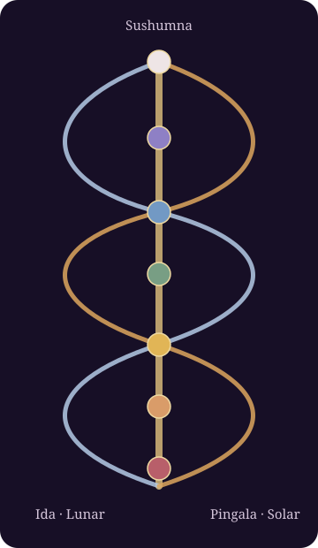

Across yogic and Western esoteric teachings, breath, geometric form, and symbolic centers provide languages for exploring experience. Similarities are illuminating when the traditions behind them remain visible.
I. Prana & the three nadis
Prāṇa means vital breath or life force in many Indian yogic traditions. Nadis are subtle channels through which that force is said to move. Three repeatedly discussed channels are Ida, Pingala, and Sushumna.

Ida is traditionally linked with lunar, receptive and cooling qualities. Pingala is associated with solar, active and warming qualities. Sushumna, the central channel, becomes important in Kundalini teachings, which describe a transformative ascent through the subtle centers.
II. Seven chakras: wheels & lotus flowers
Chakra means wheel. Lotus imagery signifies latent potential and unfolding awareness. Among the widely taught petal counts are four for Muladhara, six for Svadhisthana, ten for Manipura, twelve for Anahata, sixteen for Vishuddha, two for Ajna, and a thousand for Sahasrara.
Muladhara · 4 petals · LAM
Svadhisthana · 6 petals · VAM
Manipura · 10 petals · RAM
Anahata · 12 petals · YAM
Vishuddha · 16 petals · HAM
Ajna · 2 petals · mantras vary by tradition
Sahasrara · thousand-petaled lotus · often treated as beyond ordinary bija syllables
The familiar red-to-violet seven-chakra scale is a later, standardized teaching convention. Older Tantric imagery can differ considerably in color, deity, mantra and placement. The thousand-petaled lotus refers to expansive realization in some yogic traditions; the number should be understood within its symbolic and doctrinal context.
III. Five tattvas in the Regardie system
The Sanskrit tattva refers to a fundamental principle or reality, although Indian philosophical enumerations frequently extend well beyond five. In The Middle Pillar, Israel Regardie describes the following elemental emblems as part of a Western esoteric correspondence system.


Prithivi · Earth
The yellow square expresses cohesion, materialization, and solidity. Four equal sides evoke defined boundaries, foundation, and enduring structure.
Apas · Water
The silver crescent expresses the principle of liquidity. Flow, adaptation, and reflectivity supply interpretive parallels.
Tejas · Fire
The red triangle expresses heat and transmutation. It is a natural visual prompt for transformation and focused activity.
Vayu · Air
The blue circle represents motion and the principle of vapor or gas. Continuity and circulation become its central symbolic themes.
Akasha · Ether / Spirit
The black oval represents unity and limitlessness. Its egglike geometry may suggest undifferentiated potential. This interpretation belongs to the selected Western esoteric context.
IV. Why diagrams differ
Indian yogic traditions often associate the first five chakras with Earth, Water, Fire, Air, and Space. Yet the chakra yantras should not automatically be replaced with Golden Dawn tattva emblems. For instance, Anahata is often depicted with interlocking triangles for Air, while Vishuddha is associated with a circle for Space. Those shapes differ from Regardie's blue Air circle and black Akasha oval.
V. Study and contemplation
For a simple exercise, observe one emblem, read its stated qualities, and record the associations it evokes. Gentle natural breathing can help maintain attention. Avoid forcing the breath or using intense breath-retention techniques without appropriate guidance. Optical afterimages and subjective sensations do not demonstrate the physical existence of subtle channels.
VI. Source notes
These references are a starting map for further research, not a claim that all texts agree.
- Israel Regardie, The Middle Pillar: primary reference for the five tattva emblems used in this guide.
- Israel Regardie, The Golden Dawn: broader ceremonial context for the elemental symbols.
- The Tattwas of the Eastern School, historical Golden Dawn material on colors and forms.
- Rama Prasad, Nature's Finer Forces: a key source for the historical circulation of tattva theory in Western esoteric circles.
- Ṣaṭ-Cakra-Nirūpaṇa: a Sanskrit Tantric source for comparing chakra imagery and associated elemental signs; consult a reliable edition.